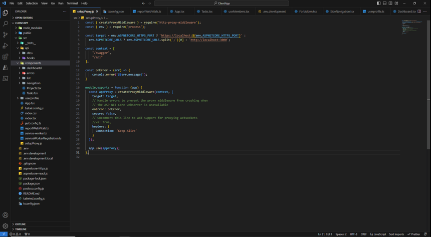
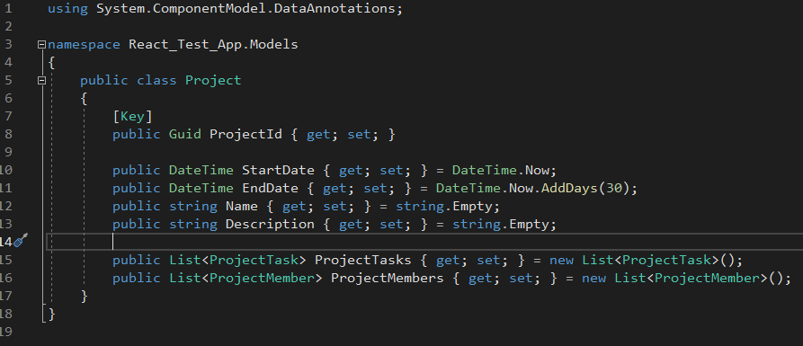
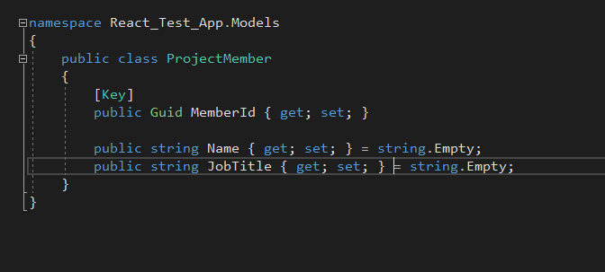
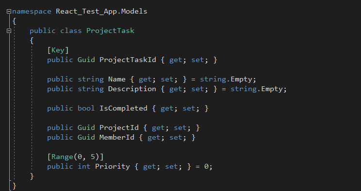

Side Project: Project Organizer
Oct 15 2023
Going With Curiousity
The project organizer was an idea that I always go back too. It is an idea that allows you to make a project to be as complex as you want it. It takes a basic
CRUD side project and further expands on it. You can add features like user management, role assignment, impersonation, and many more. The ceiling is massive, and while doing so,
look at which technologies you want to integrate. Possibly it is something you heard of and want to further explore. In my case, I wanted to bring in technologies
I've never used before. These are all technologies that can be utilize in the real-world and mastered to a degree in the project. The entire stack of the web application
I had a library, framework, or technique to bring into it. To start, I used dotnet's react template to help scaffold the project's UI and backend. I then
started to convert the project to TypeScript, and added tailwind css to support the UI design. Unit testing on the front-end was something I lacked in
understanding. So I brough in a combination of jest, and an expansion package to jest called jest-dom. To help me setup the Rest API implementation I found
SWR. Which is renowed for it's declarative nature in data communications to the web api and back. Extending SWR with React hooks was another cool technique when I
started to create the API layer. After the general setup and a few days working on building the front end, below is a picture of the structure right now.

After a few planning phases on figuring out how do I want to architecture to flow. To start off very simple. I went with a landing page that will be a dashboard.
The user can also check to see their projects and taskes they are a part of. They can interact with projects and tasks. For projects. They can view each project and
see all the tasks and members. For their tasks. The user can, add, update or remove a task. What I want to aim for is to start off very simple and when the architecture
is in place properly. To further expand, and add new layers. Ideally, having a way to establish user creation and authorization into the application is going to be a must.
To jump back into it and breakdown the backend system. I went with a .NET 7 solution that uses Entity Framework. To keep things separated I implemented the repository pattern and setup
the DbContext. Then I went through a few iterations of figuring out what model structure I wanted for my migrations. Eventually I settled with the images below.


